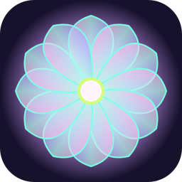

Completed · v1.0.0
Kaleidoscope

An immersive listening room for original music, albums, animated worlds and interactive instruments.
Welcome to the listening room.
Explore original albums and psychedelic visual experiences on mobile or desktop. Step inside the music, then discover and play the virtual instruments behind the tracks.
Enter the listening room ↗What’s new in v1.0: Kaleidoscope graduates to a completed listening-room experience with original music, visuals and its growing instrument library.
North Path release announcement and changelog ↗
Instrument Library
Explore our virtual instruments. Choose an icon to open and play its instrument. Each keeps its own identity wherever it appears in Kaleidoscope.
Showing all 19 instruments


Driftglass and Halo Glass are the two featured Orbital Drift instruments. Halo Glass is a new lead prototype, not yet matched to the original recording. Gravity Well and Moonclock remain available as standalone experiments. Disco Drive is an experiment without an album match.
What’s new · Record 004
Oceans of Air is the new title for Record 004, now featuring the original four-minute composition from our latest session. Its new psychedelic cloud-ocean animation is live in widescreen and portrait layouts.
04 · Oceans of Air
A four-minute ambient voyage through floating harmonies and luminous melodic phrases. Hear Oceans of Air in the Record Room.
01 · Orbital Drift — A Father’s Return
Our first video: an ambient illustrated journey about a father, his child, distance, passing years and reunion.
02 · Sunlit
Bright house at 130 BPM, sparkling arpeggios, pastel glass and neon kaleidoscopic patterns.
The songs and videos are hosted on Google Drive. Visit the gallery. Headphones recommended.
03 · Black Coil — Living Machine
Dark, hypnotic industrial psychedelia at 80 BPM, with a living machine visual experience.
← Back to the collection